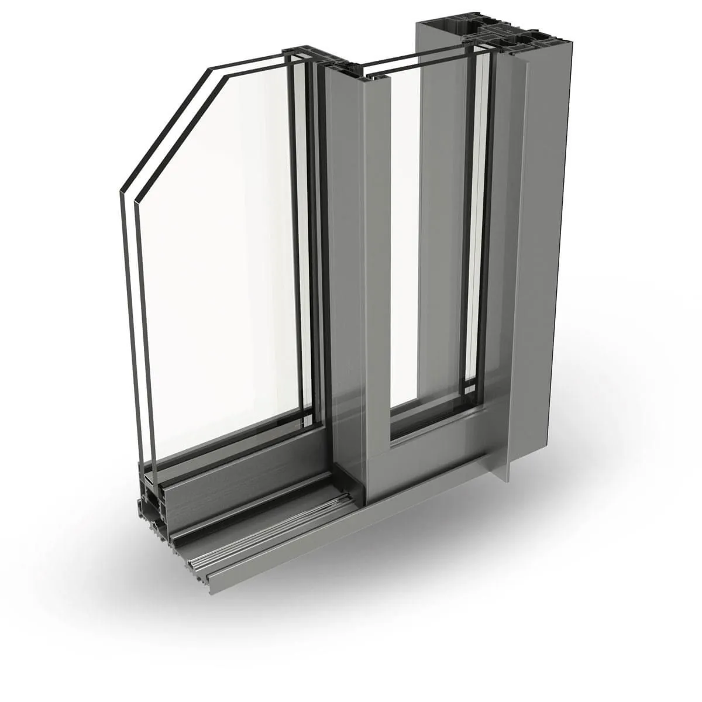
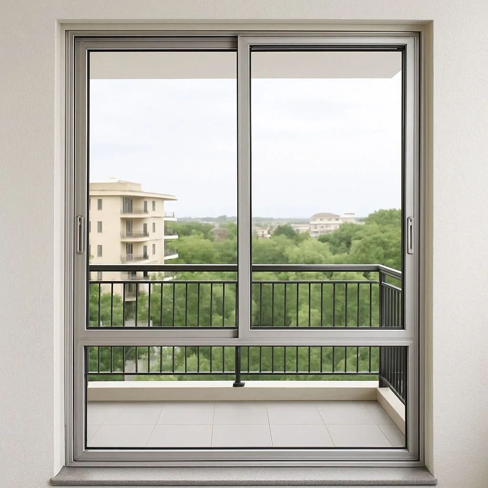
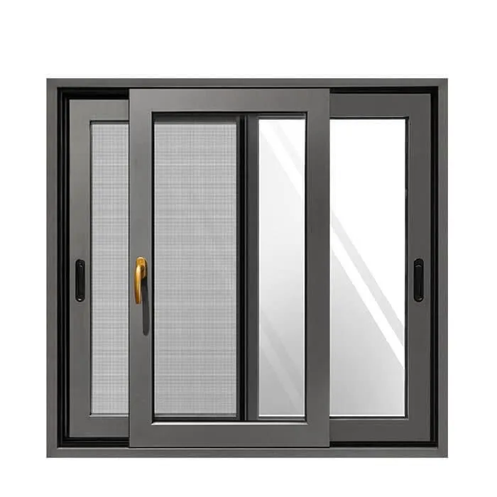
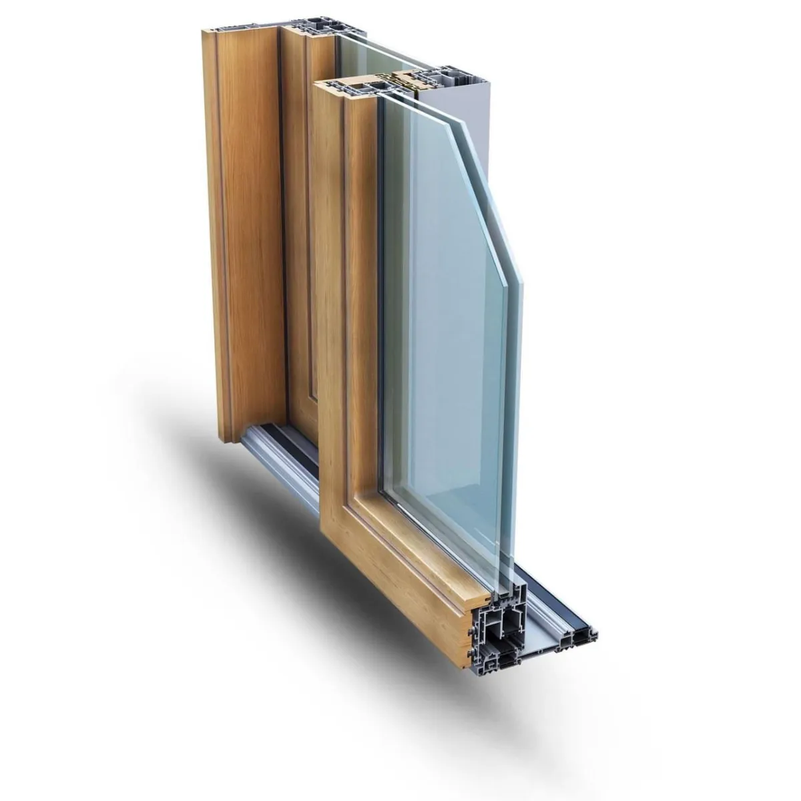

This page explains soundproof windows price ranges, noise reduction levels, glass options (DGU, laminated), and installation costs in simple language — so you can understand estimates without confusion. Our website is for information only — we want to give you a clear picture, so making decisions is simple. Prices are market references — actual costs depend on specifications.
💰 Soundproof Windows Price Range (Reference Only)
₹800 – ₹1,800 per sq.ft
Price varies based on specifications (glass type, noise reduction level, profile series, installation type, location & transport)
In cities like Hyderabad, Delhi, Bangalore, Pune, and Jaipur, traffic, construction, and urban noise are common. Soundproof windows can reduce noise by 30-50 dB — an ideal solution for a peaceful home environment.

Understanding Noise and Sound Transmission
Sound travels through air and materials. When noise hits a window, it can pass through in three ways: through the glass, through gaps and seals, and through vibrations in the frame. Effective soundproofing addresses all three transmission paths.
🔊 Noise Reduction Levels Comparison
Types of Soundproof Windows
DGU with Acoustic
Two panes + acoustic layer = 35-45 dB reduction. Best value for money.

Single Glazed Acoustic
Laminated glass with PVB interlayer. 30-35 dB reduction.

Acoustic Laminated
PVB interlayer absorbs sound waves. Ideal for busy roads.

Triple-Pane Acoustic
Three panes for maximum 45-50 dB reduction. Best for airports.
DGU with Acoustic
Two panes + acoustic layer = 35-45 dB reduction
Triple-Pane
Three panes for maximum 45-50 dB reduction
Acoustic Laminated
PVB interlayer absorbs sound waves
1. Double Glazed Units (DGU) with Acoustic Lamination
The most effective solution combines double glazing with laminated acoustic glass:
- 🔹 Two panes of glass with air gap
- 🔹 Laminated glass with acoustic interlayer
- 🔹 Reduces noise by 35-45 dB
- 🔹 Also provides thermal insulation
2. Triple-Pane Windows
Three panes of glass with two air gaps provide maximum soundproofing for extreme noise environments like homes near airports or highways.
3. Acoustic Laminated Glass
Special PVB interlayer in laminated glass absorbs sound waves, making it ideal for high-traffic areas.
City-Specific Recommendations
Hyderabad
For homes near ORR, IT corridors, or busy areas like Banjara Hills, DGU with acoustic laminated glass provides excellent noise reduction for both traffic and construction noise.
Delhi
Given the high traffic density and airport proximity in some areas, triple-pane or specialized acoustic windows are recommended for maximum noise reduction.
Bangalore
For homes near IT parks, highways, or airport areas, DGU with laminated glass effectively reduces both traffic and aircraft noise.
Pune
Areas near industrial zones or busy roads benefit from acoustic laminated glass windows to reduce machinery and traffic noise.
Jaipur
Heritage areas and busy commercial zones can benefit from soundproof windows that maintain aesthetic appeal while reducing noise.
Factors Affecting Soundproofing Performance
Thicker glass reduces more sound
Larger gaps (12-16mm) improve performance
Proper sealing prevents sound leaks
Thermal breaks reduce vibrations
Professional installation ensures optimal performance
Installation Considerations
Proper installation is crucial for soundproofing effectiveness:
- Ensure airtight sealing around frames
- Use acoustic sealants for gaps
- Install with proper spacing from walls
- Check for any air leaks after installation
- Consider window orientation relative to noise sources
Additional Soundproofing Tips
- Combine soundproof windows with heavy curtains for extra noise reduction
- Seal all gaps around windows during installation
- Consider the window-to-wall ratio for optimal results
- Use weatherstripping for additional sound blocking
- Maintain windows regularly to preserve seal integrity
What Factors Affect the Price?
The price of soundproof windows depends on several factors. If you need a clear estimate, it's important to understand these factors:
- Glass Type: Single glass (₹400-600/sqft), DGU (₹800-1,200/sqft), Laminated (₹1,000-1,400/sqft), Triple-pane (₹1,400-1,800/sqft)
- Noise Reduction Level: 30 dB (light), 40 dB (moderate), 45 dB (high), 50 dB (maximum)
- Profile Series: 29mm Premium (₹1,200-1,400/sqft), Slim Profile (₹900-1,400/sqft), French / Casement Door (₹1,350-2,250/sqft)
- Air Gap Size: 6mm (standard), 12mm (enhanced), 16mm (maximum) — larger gap = better soundproofing
- Installation Type: Professional installation (5-10% of total cost) with proper sealing
- Location & Transport: Hyderabad, Mumbai, Delhi NCR, Bangalore — transport costs vary by location
Real Example Calculation
Example — If you install a 10×8 feet soundproof window (facing a busy road):
- Total Area: 10 × 8 = 80 sq.ft
- DGU with Acoustic Laminated (40-45 dB reduction): ₹1,000-1,200/sqft
- Total Cost: 80 × ₹1,100 (average) = ₹88,000
- With Triple-Pane Upgrade (45-50 dB reduction): +₹300/sqft = 80 × ₹300 = +₹24,000
- Final Cost with Triple-Pane: ₹88,000 + ₹24,000 = ₹1,12,000
Note: This price is a reference. Actual cost depends on your location (Hyderabad, Mumbai, etc.), vendor, and exact specifications.
Get Your Soundproof Windows Price Estimate
Calculate exact price for your home. Free calculator available.
Calculate Price Now →Or contact us for personalized quote
Measuring Noise Reduction
Soundproofing effectiveness is measured in decibels (dB). Here's what different levels mean:
Whisper Level
Good for light traffic
Quiet Office
Good for moderate traffic
Library Level
Excellent for busy roads
Very Quiet
Near-total noise elimination
Common FAQs
1. How is soundproof window price calculated?
To calculate price: (Width × Height in sq.ft) × Price per sq.ft. Example: 10×8 feet = 80 sq.ft. If price is ₹1,100/sq.ft (DGU with acoustic), then total = 80 × ₹1,100 = ₹88,000. Glass upgrades, profile series, and installation costs are added to this.
2. DGU vs Laminated glass — which is better for soundproofing?
DGU (Double Glazed Unit) provides 35-40 dB noise reduction and also provides thermal insulation — most cost-effective solution. Laminated glass provides 40-45 dB noise reduction and also provides safety (glass pieces stick together when broken). If you need maximum soundproofing, DGU with laminated glass is best.
3. How much noise reduction is sufficient?
30 dB — sufficient for light traffic (whisper level). 40 dB — good for moderate traffic (quiet office level). 45 dB — excellent for busy roads (library level). 50 dB — maximum for airports or highways (near-total noise elimination). Choose based on your location.
4. Is there a price difference in Hyderabad, Delhi, and Bangalore?
Base prices are similar, but transport costs vary by location. Transport costs may be higher in Mumbai and Delhi NCR. You can save on transport costs by purchasing directly from local vendors. Installation costs also vary by location.
5. Do soundproof windows reduce electricity bills?
Yes, DGU glass also provides thermal insulation — AC bills can be reduced by 20-30%. Soundproof windows use DGU, so energy efficiency is a bonus benefit. There are significant savings compared to single glass, especially during summer months.
6. What should be considered during installation?
Professional installation is necessary because proper sealing is critical for noise reduction. Air leaks can cause soundproofing to fail. Use acoustic sealants, properly seal gaps, and test for air leaks after installation. Improper installation can void warranty.
Price Calculate Karna Ho To
If you need help understanding prices, discuss with your local vendor. Our website also has a free calculator available.
Free Price Calculator → Get Quote Now →👉 Also read: Energy Efficient Windows Guide | Aluminium Sliding Glass Door Price